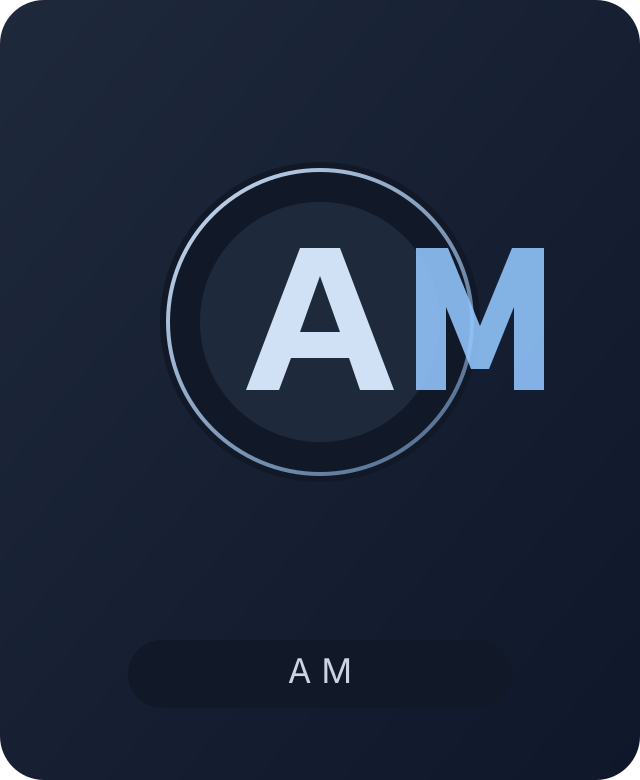

Frontend Engineer · UI-Focused Engineer
Aleksandr Mazhul
Строю аккуратные интерфейсы и визуальные системы: от типографики и сеток до анимации и архитектуры компонентов. Фокус на чистой реализации, читаемом коде и точной детализации.

Мажуль Александр Павлович
Студент направления «Математика и компьютерные науки». Работаю на стыке frontend-инженерии, UI-проектирования и системного подхода к интерфейсам.
Education
Белорусский Государственный Университет (БГУ), механико-математический факультет. Направление: математика и компьютерные науки.
Favorite Book
Clean Architecture (Robert C. Martin). Нравится инженерный подход к структуре систем и разделению ответственности.
Quote
«Хороший интерфейс не кричит о себе: он просто позволяет думать о задаче, а не о форме.»
Skills
HTMLCSSJavaScriptReactTypeScript
ViteTailwindGitLinuxUI/UX
Interests
UI-исследования, архитектура фронтенда, дизайн-системы, математика, Linux-экосистема, визуальная эстетика цифровых продуктов и creative coding.
Personal Summary
Мне ближе проекты, где важны одновременно инженерная точность и визуальная культура интерфейса. Люблю аккуратные сетки, предсказуемую логику и сдержанную анимацию, которая усиливает UX, а не отвлекает от контента.